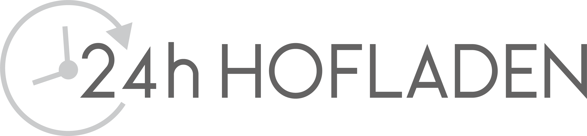
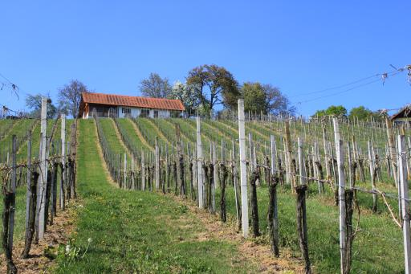

Herzlich Willkommen!

Kontaktloses Einkaufen in unserem 24h Hofladen am Weinhof in Hartl.
Euer Nachschub an Wein, Kernöl, Saft usw. ist gesichert!
Unsere Produkte werden natürlich auch weiterhin per Paketdienst versendet oder wenn möglich in der näheren Umgebung kostenlos zugestellt!
Alles Gute und vielen Dank für die Treue in dieser ausgewöhnlichen Zeit!
Bleibt gesund, Familie Hartinger
"Ausgezeichneter Erfolg"

Unser Kernöl ist eines der 3. Besten in der Steiermark
